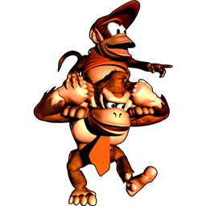

 Donkey Kong Country
Details
 |
|
| Playtime | Not Played |
| Last Activity | Never |
| Added | 4/29/2025 6:52:10 |
| Modified | 4/29/2025 23:29:50 |
| Completion Status | Not Played |
| Library | Playnite |
| Source | |
| Platform | Nintendo SNES |
| Release Date | 11/18/1994 |
| Community Score | |
| Critic Score | |
| User Score | |
| Genre | Platform |
| Developer | Rare |
| Publisher | Nintendo |
| Feature | Multiplayer Single Player |
| Links | Wikipedia Official website Donkey Kong Country at the Super Mario Wiki |
| Tag | [People] artist: Adrian Smith [People] artist: Kevin Bayliss [People] artist: Mark Stevenson [People] artist: Steve Mayles [People] composer: David Wise [People] composer: Eveline Novakovic [People] composer: Robin Beanland [People] designer: Gregg Mayles [People] director: Chris Stamper [People] director: Tim Stamper [People] programmer: Chris Sutherland [People] writer: Daniel Owsen [People] writer: Gregg Mayles |
Description
Donkey Kong Country is a 1994 platform game developed by Rare and published by Nintendo for the Super Nintendo Entertainment System (SNES). It is a reboot of Nintendo's Donkey Kong franchise and follows the gorilla Donkey Kong and his nephew Diddy Kong as they set out to recover their stolen banana hoard from the crocodile King K. Rool and his army, the Kremlings. The player traverses 40 side-scrolling levels as they jump between platforms and avoid obstacles. They collect items, ride minecarts and animals, defeat enemies and bosses, and find secret bonus stages. In multiplayer modes, two players work cooperatively or race.
After developing Nintendo Entertainment System games in the 1980s, Rare, a British studio founded by Tim and Chris Stamper, purchased Silicon Graphics workstations to render 3D models. Nintendo sought a game to compete with Sega's Aladdin (1993) and commissioned Rare to revive the dormant Donkey Kong franchise. Rare assembled 12 developers to work on Donkey Kong Country over 18 months. Donkey Kong Country was inspired by the Super Mario series and was one of the first home console games to feature pre-rendered graphics, achieved through a compression technique that converted 3D models into SNES sprites with little loss of detail. It was the first Donkey Kong game neither produced nor directed by the franchise's creator, Shigeru Miyamoto, though he contributed design ideas.
Following its announcement at the Consumer Electronics Show in June 1994, Donkey Kong Country was highly anticipated and backed by a major marketing campaign that cost $16 million in America alone. It was released in November 1994 to acclaim; critics hailed its visuals as groundbreaking and praised its gameplay and music. Its quality and design were favourably compared to the Super Mario series. Donkey Kong Country received several year-end accolades and set the record for the fastest-selling video game at the time. With 9.3 million copies sold worldwide, it is the third-bestselling SNES game and the bestselling Donkey Kong game. Following the success, Nintendo purchased a large minority stake in Rare, which became a prominent second-party developer for Nintendo during the late 1990s.
Donkey Kong Country re-established Donkey Kong as a popular Nintendo franchise and helped maintain the SNES's popularity into the fifth generation of video game consoles. It is considered one of the greatest video games of all time and has been ported to platforms such as the Game Boy Color, Game Boy Advance, and digital distribution services. Rare followed it with two sequels for the SNES, Donkey Kong Country 2: Diddy's Kong Quest (1995) and Donkey Kong Country 3: Dixie Kong's Double Trouble! (1996), and the Nintendo 64 game Donkey Kong 64 (1999). After a hiatus, during which Rare was acquired by the Nintendo competitor Microsoft, Retro Studios revived the series with Donkey Kong Country Returns (2010) for the Wii and Donkey Kong Country: Tropical Freeze (2014) for the Wii U.
Gameplay
Donkey Kong Country is a side-scrolling platform game. A reboot of the Donkey Kong franchise, its story begins when King K. Rool and his army of crocodiles, the Kremlings, steal the Kongs' banana hoard. The gorilla Donkey Kong and his nephew Diddy Kong set out to reclaim the hoard and defeat the Kremlings. Donkey and Diddy serve as the player characters of the single-player game; they run alongside each other and the player can swap between them at will. Donkey is stronger and can defeat enemies more easily; Diddy is faster and more agile. Both can walk, run, jump, pick up and throw objects, and roll; Donkey can slap the terrain to defeat enemies or find items.
The player begins in a world map that tracks their progress and provides access to the 40 levels. The player attempts to complete each level while traversing the environment, jumping between platforms, and avoiding enemy and inanimate obstacles. Level themes include jungles, underwater reefs, caves, mines, mountains, and factories. Some feature unique game mechanics, such as rideable minecarts, blasting out of cannons resembling barrels, and swinging ropes. Each area ends with a boss fight with a large enemy. Donkey and Diddy can defeat enemies by jumping on, rolling into, or throwing barrels at them. If hit by an obstacle, one of the Kongs runs off and the player automatically takes control of the other. They will only be able to control that Kong unless they free the other Kong from a barrel.
In certain levels, the player can free an animal that provides the Kongs with special abilities, similar to Yoshi from the Super Mario series. Buddies include Rambi, a rhino that can charge into enemies and find hidden entrances; Enguarde, a swordfish that can defeat enemies with its bill; Squawks, a parrot that carries a lantern; Expresso, an ostrich that flies; and Winky, a frog that can jump high. Each level contains collectible bananas, letters that spell out K–O–N–G, balloons, and animal tokens. These items can be found within the main level or by discovering hidden bonus stages, where they are earned via solving puzzles. The player starts with six lives. Collecting 100 bananas, all the K–O–N–G letters, a balloon, or three of the same animal token grants extra lives.
The player can visit other members of the Kong family from the world map. Funky Kong operates a flight service allowing the player to travel across different areas of Donkey Kong Island; Cranky Kong, the aged incarnation of Donkey Kong from the original Donkey Kong (1981), provides tips and fourth wall-breaking humour; and Candy Kong saves the player's progress. The player can increase their completion percentage by finding bonus stages. Reaching the maximum 101 per cent results in a different ending. The game also features two multiplayer game modes. In the competitive "Contest" mode, players take turns playing each level as quickly as possible. In the cooperative "Team" mode, they play as a tag team.
Development
In 1985, the British game developers Tim and Chris Stamper established Rare Ltd. The brothers previously founded the British computer game studio Ultimate Play the Game and founded Rare to focus on the burgeoning Japanese console market. After Nintendo rejected their efforts to form a partnership in 1983, Chris Stamper studied the Nintendo Entertainment System (NES) hardware for six months. Rare demonstrated it was possible to reverse-engineer the NES and showed several tech demos to Nintendo executive Minoru Arakawa; impressed, Arakawa granted Rare a Nintendo developer licence. Rare developed more than 60 NES games, including the Battletoads series.
When Nintendo released their next console, the Super Nintendo Entertainment System (SNES), in 1991, Rare decided to limit their output. Around 1992, Rare invested their NES profit in Silicon Graphics, Inc. (SGI) Challenge workstations with Alias rendering software to render 3D models. It was a significant risk, as each workstation cost £80,000. The move made Rare the most technologically advanced UK developer and situated them high in the international market. In 1993, Nintendo formed a partnership with SGI to develop the SNES's successor, the Nintendo 64.
Conception
Though they had purchased the workstations to produce games for the Nintendo 64, Rare discovered it was possible to use them with the 16-bit SNES. Rare tested the SGI technology with Battletoads Arcade (1994) and began developing a boxing game, Brute Force, using PowerAnimator. Around this time, Nintendo was embroiled in a console war with Sega, whose Mega Drive competed with the SNES. Nintendo wanted a game to compete with Sega's Aladdin (1993), which featured graphics by Disney animators, when Nintendo of America's chairman Howard Lincoln learned of Rare's SGI experiments during a trip to Europe. Nintendo sent several representatives, including the chief technology officer Genyo Takeda; they asked the Stampers if they could demonstrate Brute Force on the SNES hardware. Within two days, the Stampers developed a working build, impressing Nintendo.
Tim Stamper—inspired by Mortal Kombat's (1992) use of digitised footage in place of hand-drawn art—suggested developing a platform game that used pre-rendered graphics. Nintendo granted the Stampers permission to use the Donkey Kong intellectual property. The franchise had been largely dormant since the unsuccessful Donkey Kong 3 (1983), so Nintendo figured that licensing it posed minimal risk. Some sources indicate that the Stampers obtained the licence after Nintendo offered them their catalogue of characters and they chose Donkey Kong. Conversely, the lead designer Gregg Mayles and his brother Steve recalled that it was Nintendo that requested a Donkey Kong game. Donkey Kong's creator, Shigeru Miyamoto, said that Rare approached Nintendo and offered to handle Donkey Kong since other developers were preoccupied with franchises such as Mario and The Legend of Zelda.
Rare assembled a team of 12, the largest in their history at that point, and development began in mid-1993. Nintendo was sceptical of Rare's approach to graphics, concerned it would make the game unplayable. Early in development, Mayles and other developers presented a demo to Nintendo staff in Japan. One in attendance, the Game Boy creator Gunpei Yokoi, felt the game "looked too 3D", but Mayles said Miyamoto was supportive and gave Rare his approval. Nintendo codenamed the project "Country" (based on Rare's location in Twycross), leading to the title Donkey Kong Country. Other titles considered included Rumble in the Jungle, Monkey Mayhem, and Donkey Kong and the Golden Bananas. Donkey Kong Country was the first Donkey Kong game that was neither directed nor produced by Miyamoto, who was working on Super Mario World 2: Yoshi's Island (1995). Miyamoto was still involved with the project and Rare said he provided crucial input.
Nintendo is usually highly protective of their intellectual properties, but was relatively uninvolved with Donkey Kong Country, leaving most of the work to Rare. Programmer Brendan Gunn noted that the Stampers worked to shield the team from outside influence. Rare spent 18 months developing Donkey Kong Country from an initial concept to a finished game, and according to product manager Dan Owsen, 20 people worked on it in total. It cost an estimated US$1 million to produce, and Rare said that it had the most man hours ever invested in a video game at the time, 22 years. The team worked 12–16-hours every day of the week. Gunn said that the team was under significant pressure from the Stampers and to finish the game in time for Thanksgiving due to Nintendo's competition with Sega.
Rare drew inspiration from the Super Mario series, Mayles citing Super Mario Bros. 3 (1988) as the primary influence on the level design. Mayles wanted to make a game that was accessible but would flow seamlessly for a skilled player; as such, objects were placed so well-timed players could continually move through a level. Mayles noted that although the concept of speedrunning did not exist at the time, "the way the game was designed definitely supports it". The level locales were inspired by the films Return of the Jedi (1983) and Indiana Jones and the Temple of Doom (1984).
The team designed levels using Post-it Notes; they conceived set pieces (such as swinging ropes), created every variation they could think of, drew them on Post-it Notes, and pieced them together. Rare featured barrels as a primary game mechanic to pay homage to the original arcade game, and included hidden collectibles like coins and balloons to add depth. Diddy Kong originated from Rare's search for a game mechanic akin to Super Mario's power-up system in that he would serve as the player's health. Mayles said: "We thought a second character could perform this function, look visually impressive, and give the player a feeling that they were not alone".
Donkey Kong Country did not have much scrapped content; Gunn said he only regretted that Donkey Kong walks across dotted lines instead of paths on the world map, which could not be implemented due to time constraints. One scrapped idea, a collectible that would evade the player by running or hiding, served as the basis for the Jinjos in Rare's subsequent game Banjo-Kazooie (1998). Reviewing Donkey Kong Country for release, Nintendo directed Rare to reduce the difficulty to appeal to a broad audience, reasoning that the secrets would provide sufficient challenge for hardcore gamers. At this point, Miyamoto made some last-minute suggestions, such as Donkey Kong's terrain slap, that were incorporated. Nintendo's Kensuke Tanabe flew to Twycross to localise the game with Rare.
Kevin Bayliss was in charge of redesigning Donkey Kong. He wanted a character that looked believable and could perform animations like pounding his chest. His initial design was blocky and muscular to make Donkey Kong easy to animate, but it became more cartoonish when Nintendo faxed reference material. Some of Bayliss' designs were in the style of his Battletoads work, and the final design's eyes came from those of the Battletoads. Miyamoto provided some suggestions, including the red tie, but left the design's specifics to Bayliss.
Because Donkey Kong did not have much of an established universe, Rare was free to expand it with new characters. Mayles conceived Diddy as a redesign of Donkey Kong Jr., and Bayliss designed him. Unlike the original Donkey Kong Jr., Rare did not want Diddy to share his build with Donkey Kong, so Bayliss based the design on a spider monkey and made him agile to give him distinct moves. The redesign was also motivated by Bayliss' distaste for Donkey Kong Jr. Nintendo considered the redesign too great a departure and asked it to be reworked or presented as a new character. Mayles felt the redesign suited the updated Donkey Kong universe, so he chose to make it a new character. Naming the character was a challenge; considered names included "Diet Donkey Kong", "Donkey Kong Lite", and "Titchy Kong". Rare settled on "Dinky", but ultimately changed it to "Diddy" due to legal problems.
Rare staff spent hours at the nearby Twycross Zoo recording gorillas for reference, which they described as "a complete waste of time". They found their movements unsuitable for a fast game and their noises too quiet to be captured by a microphone, so they based Donkey Kong's running animation on a horse's gallop and had programmer Mark Betteridge provide Donkey and Diddy's voice clips. Rare positioned Cranky Kong as the original Donkey Kong character from the arcade games but avoided mentioning this in the game and marketing materials out of fear that Nintendo would disapprove of the idea, though it was mentioned in the instruction manual. Rare created each character using Donkey Kong's model as a base and made the Kong designs consistent to reflect that they were relatives.
All story drafts centered on the theft of Donkey Kong's banana hoard. According to Mayles, the team pitched the Super Mario character Wario as the antagonist, but Nintendo asked them to use original characters. They recycled the Kremlings from Johnny Blastoff and the Kremling Armada, a cancelled Monkey Island-style adventure game. Their name is a play on the Moscow Kremlin. Rare's initial story was extensive and spanned 15 pages, but Nintendo had it condensed to fit into an instruction manual.
Donkey Kong Country was one of the first games for a mainstream home video game console to use pre-rendered 3D graphics, a technique used in the earlier 1993 Finnish game Stardust for the Amiga. Rare developed a compression technique to incorporate more detail and animation for each sprite for a given memory footprint, which better preserved the pre-rendered graphics. Nintendo and Rare called the technique Advanced Computer Modelling (ACM). Rare briefly feared competition from DMA Design's Uniracers (1994), which also featured pre-rendered graphics, but the staff was relieved upon learning that the player character was Uniracer's only element that was pre-rendered.
The artists began by modelling the characters in NURBS using PowerAnimator and adding textures. They then created the animations and rendered them frame by frame before compressing them for the game. The ACM process was handled by a designated computer that had a proprietary utility similar to Deluxe Paint. Adapting to the cutting-edge SGI workstations was difficult; Gregg Mayles' brother Steve said they had a steep learning curve. To help, Nintendo provided Rare with research material regarding apes, barrels, and caves. The pre-rendered graphics allowed for variety and detail uncommon at the time, and Tim Stamper constantly pushed the team to go further and incorporate weather and lighting effects.
The game was Rare's first to require multiple programmers, and they worked with little guidance. The ACM process pushed the SNES hardware to its limits; Betteridge said Rare wanted to do everything they could with the hardware similar to what they had done with the NES game Battletoads (1991). A single SGI screen took up more memory than an entire SNES cartridge, and Gregg Mayles described transferring the backgrounds into the game by splitting them into tiles as "the bane of the project". Models took hours to render, so the team would leave the computers running overnight. Sometimes, artists would shut down other artists' computers in the middle of the process so they could render their own models. The SGI machines required a massive air conditioning unit to prevent overheating, while the team worked in the summer heat without relief. Programmer Chris Sutherland was responsible for implementing the graphics and found reducing the characters' frames of animation challenging.
David Wise composed most of the soundtrack. Wise initially worked as a freelancer and assumed his music would be replaced by Koji Kondo because of the importance of Donkey Kong to Nintendo. Rare asked Wise to record three jungle demo tunes that were merged to become the "DK Island Swing", the first level's track. Miyamoto was impressed, and Wise was enlisted to produce the final score. Before composing, Wise was shown the graphics and given an opportunity to play the level they would appear in, which gave him a sense of the music he would compose. He chose samples and optimised the music to work on the SNES's SPC700 sound chip. Wise worked separately from the team in a former cattle shed, visited occasionally by Tim Stamper.
Donkey Kong Country features atmospheric music that mixes natural environmental sounds with prominent melodic and percussive accompaniments. Its soundtrack attempts to evoke the environments and includes music from levels set in Africa-inspired jungles, caverns, oceanic reefs, frozen landscapes, and industrial factories. Wise cited Koji Kondo's music for the Super Mario and Legend of Zelda games, Tim and Geoff Follin's music for Plok! (1993), and 1980s synthesiser film soundtracks, rock, and dance music as influences, and wanted to imitate the sound of the Korg Wavestation synthesiser. He wrote lyrics for each melody, though The New York Times noted "no one is really meant to hear them".
Since Donkey Kong Country featured advanced pre-rendered graphics, Wise wanted to push the limits to create "equally impressive" music and make the most of the limited memory he was working with. Wise found Donkey Kong "a little more brutal" than Mario, so departed from Super Mario's Latin and calypso-inspired sound. He wanted to compose in the style of 1940s jazz, seeking to imitate the Glenn Miller Orchestra in the "DK Island Swing", but was restricted by the SPC700's limitations; he "used a lot of small samples and made [the soundtrack] very synthesised" to work around them. His colleague Grant Kirkhope said that Wise's familiarity with the SNES hardware meant he could "make it do things that people hadn't heard before".
"Aquatic Ambience", the music that plays in the underwater levels, took five weeks to compose. Wise was inspired by a recent breakup, which made him feel as if he was drowning. He considers the track his favourite and the game's biggest technological accomplishment in regards to the audio. The boss theme was inspired by the Nine Inch Nails song "March of the Pigs" (1994), and K. Rool's theme was influenced by sea shanties, barrel organ music, and the work of Iron Maiden. For the title screen theme, Wise remixed Nintendo's original Donkey Kong theme to demonstrate Donkey Kong's evolution. Wise said his primary focus was to make the most of the SPC700, and he input the music by hand to save memory. He noted the process was easier than composing for the NES due to the larger number of sound channels.
Eveline Novakovic contributed seven tracks, including the world map theme, as her first SNES project. Novakovic was inexperienced with the SNES hardware and Wise helped teach her as they worked together. She attempted to provide the levels a sense of purpose and drew inspiration from film composers like Alan Silvestri and Klaus Doldinger. Funky Kong's theme was originally written by Robin Beanland. According to Beanland, the track was intended for an internal progress video about another Rare game, Killer Instinct (1994), before Nintendo decided to use it in a Donkey Kong Country promotional trailer. Beanland said Tim Stamper liked it and wanted to include it in the game, so Wise adopted it.
Release
Marketing
Lincoln unveiled Donkey Kong Country at the Consumer Electronics Show in Chicago, which took place from 23 to 25 June 1994. The unveiling was the finale of Nintendo's conference and did not reveal that Donkey Kong Country was a SNES game until the end of the presentation, fooling the audience into believing that it was for the upcoming Nintendo 64. Gregg Mayles recalled the audience was stunned in silence before bursting into applause.
As one of the flagship games of Nintendo's Play It Loud! promotion, Donkey Kong Country was backed by an exceptionally large marketing campaign—"marketing blitzkrieg", as Hardcore Gaming 101 put it. According to the Los Angeles Times, Nintendo spent US$16 million on marketing Donkey Kong Country in America alone; at the time, major games typically had an average marketing budget of US$5 million. Marketing materials emphasised the revolutionary graphics—often noting that Rare's SGI workstations had been used to create the Jurassic Park (1993) film's dinosaurs—and positioned Donkey Kong Country as a direct competitor to Sega's Mega-CD and 32X platforms to remind players it was not for next-generation hardware.
Nintendo sent a promotional VHS tape, Donkey Kong Country: Exposed, to subscribers of the magazine Nintendo Power. Exposed, hosted by comedian Josh Wolf, provides a "behind-the-scenes" glimpse of the Treehouse, the Nintendo of America division where games are tested. Nintendo World Report wrote that Exposed was "probably the first time most people outside of Nintendo learned about the [Treehouse]" and the promotion allowed players to see the game for themself at home, rather than having to learn about it secondhand from a magazine. Exposed also features gameplay tips and interviews with localisers, playtesters, and Tim Stamper.
In October 1994, Nintendo of America held an online promotional campaign through the internet service CompuServe. The campaign included downloadable video samples of the game, a trivia contest in which 800 people participated, and an hour-long online chat conference attended by 80 people, in which Lincoln, Arakawa, and vice-president of marketing Peter Main answered questions. Nintendo's CompuServe promotion marked an early instance of a major video game company using the internet to promote its products. Nintendo gave away Donkey Kong T-shirts as a pre-order bonus, and partnered with Kellogg's for a promotional campaign in which the packaging for Kellogg's breakfast cereals featured Donkey Kong Country character art and announced a prize giveaway. The campaign ran from November 1994 to April 1995. Fleetway Publications published a promotional comic in the UK in 1995.
By October 1994, Nintendo was still in fierce competition with Sega and its popular Sonic the Hedgehog franchise. Donkey Kong Country was released a month after Sonic & Knuckles for the Mega Drive. The Los Angeles Times characterised the coinciding releases as a battle; both featured company mascots, boasted "Hollywood-sized" marketing budgets, and advertised revolutionary technological advances (lock-on technology for Sonic & Knuckles and 3D-rendered graphics for Donkey Kong Country).
Donkey Kong Country was highly anticipated. Hardcore Gaming 101 wrote: "It was everywhere. You couldn't escape it. It was on the cover of every magazine. It was on gigantic, imposing displays and marquees at Wal-Mart and Babbages... For kids of the era, November 20th seemed like the eve of a revolution". The Exposed VHS tape contributed significantly to the hype. Donkey Kong Country was expected to gross at least US$140 million in the US if it matched sales projections. Nintendo anticipated that it would sell two million copies in a month, an expectation that Main acknowledged was unprecedented but was "based on the off-the-chart reactions we've received from game players and retailers".
USGamer noted that Nintendo, at the time of Donkey Kong Country's release, faced difficulty to keep the SNES profitable. The fifth generation of video game consoles was on the horizon, the 32-bit prowess of Sony's PlayStation and the Sega Saturn far exceeding the SNES's capabilities. The Nintendo 64 was not due for release until 1996, so Donkey Kong Country, wrote USGamer, served as Nintendo's "bluff" to make it seem that the SNES could hold its ground against next-generation hardware.
Donkey Kong Country was released worldwide in November 1994, two weeks ahead of schedule and around the Black Friday shopping season. It was released in the UK on 18 November, in North America on 21 November, in Europe on 24 November, and in Japan on 26 November. In Japan, the game was released under the title Super Donkey Kong. Donkey Kong Country set the record for the fastest-selling video game at the time: it sold over 500,000 copies within a week, and sales reached one million copies in the US alone in two weeks. In its second week on sale in the US, the game grossed US$15 million, outpacing the week's highest-grossing film (The Santa Clause, US$11.5 million) and album (Miracles: The Holiday Album, US$5.2 million). In the UK, it was the top-selling SNES game in November 1994. Donkey Kong Country sold six million copies worldwide in its first holiday season, grossing $400 million in worldwide sales revenue. Cumulative sales reached 9.3 million copies. Based on available sales figures, it is the third-bestselling SNES game and the bestselling Donkey Kong game.
Reception
Donkey Kong Country received critical acclaim and was lauded as a paradigm shift that set new standards for video games. It received perfect scores from several outlets. Diehard GameFan and Total! said it changed expectations for 16-bit and platform games, and Entertainment Weekly wrote it "is to most 16-bit games what most 16-bit games are to their Atari forebears. Once you've played it, everything else before it seems like a peewee". Electronic Gaming Monthly (EGM) called Donkey Kong Country "one of the few games that is actually as good as the hype", and Total! declared it the best game of 1994. GameFan said that Donkey Kong Country set a new quality standard that many developers would attempt to imitate.
The visuals were considered the best aspect. Reviewers considered them a major technological achievement, their detail unprecedented for a 16-bit game. EGM said that the graphical quality prompted questions about the purpose of 32- and 64-bit hardware. Total! said the character animations surpassed those of a Disney film and applauded the parallax scrolling. Several critics said the graphics were the best on available hardware, with Entertainment Weekly writing that they were comparable to matte paintings. The soundtrack and audio were also lauded. Total! said the music built atmosphere, Top Secret wrote the "captivating" soundtrack asserted itself as a masterpiece in its own right, and EGM and Entertainment Weekly said the audio quality was unprecedented for the SNES and on par with a CD's.
Reviewers praised the gameplay for its variety and depth; Entertainment Weekly appreciated that it did not build upon the original arcade game's design. Total! described Donkey Kong Country as addictive, accessible and exciting, with humour, imagination, puzzles and secrets, that proved there was still potential in the platform game genre. EGM and GameFan wrote that the game was lengthy and offered plenty of technique, and GamePro commended the replay value that searching for bonus stages provided. EGM and GamePro found searching for bonus stages was challenging, though GamePro said it was easy to "breeze through the game" without them and criticised the boss fights as simplistic.
Critics frequently compared Donkey Kong Country to the Super Mario series, particularly Super Mario World (1990). Some considered Donkey Kong Country an improvement upon the Mario formula. GameFan said it would be a worthy successor to Super Mario World even without the graphics and Total! wrote that it took Mario's best elements, increased the speed, and presented them better. Next Generation felt the gameplay, though good, did not meet the standards of previous SNES games such as the Mario and Legend of Zelda series and prevented it from being a "typical Nintendo blockbuster". CVG wrote that Donkey Kong Country was the only SNES game that matched Super Mario World, but that it would be a conventional platformer without its graphics. It warned that experienced players may find the game, designed for a broad audience, unoriginal.
Accolades
Donkey Kong Country received many Game of the Year awards. For EGM's Best and Worst of 1994, it won Game of the Year, Best SNES Game, and Best Animation; Donkey Kong and Diddy Kong won Best Game Duo. It also received Video Games: The Ultimate Gaming Magazine's awards for Game of the Year, Best SNES Game, Best Action Game, and Best Graphics. Donkey Kong Country was the only video game included in Time's Best Products of 1994 list, coming in second behind the Chrysler Neon, and it became the first game to win the Favourite Video Game Kids' Choice Award at the 1995 Kids' Choice Awards.
Post-release
In April 1995, following Donkey Kong Country's success, Nintendo purchased a 25% minority stake in Rare, which increased to 49% over time. Rare was the first non-Japanese studio to enter such a relationship with Nintendo, making them a second-party developer; Nintendo published Rare's subsequent games and allowed them to expand their staff from 84 to over 250 and move out of the farmhouse to an advanced development site elsewhere in Twycross. Rare was one of the first developers to receive Nintendo 64 software development kits and decided to start spending more time developing fewer games. Nintendo and Rare's partnership produced acclaimed Nintendo 64 games such as GoldenEye 007 (1997), Banjo-Kazooie (1998), Perfect Dark (2000), and Conker's Bad Fur Day (2001).
A proposed Game Boy port of Donkey Kong Country was repurposed as a separate game, Donkey Kong Land (1995), after the programmer Paul Machacek convinced Rare that it would be a better use of resources and expand the potential audience. Rare began developing concepts for a Donkey Kong Country sequel during production, and Nintendo green-lit the project immediately after the success. Donkey Kong Country 2: Diddy's Kong Quest, released in 1995, features Diddy rescuing a kidnapped Donkey Kong from K. Rool and introduces Diddy's girlfriend Dixie Kong. Diddy's Kong Quest was designed to be less linear and more challenging, with a theme reflecting Gregg Mayles' fascination with pirates. Like its predecessor, Diddy's Kong Quest was a major critical and commercial success.
Other teams at Rare used Donkey Kong Country's technology in the fighting game Killer Instinct and Donkey Kong Land, Donkey Kong Land 2 (1996) and Donkey Kong Land III (1997), which attempted to replicate Donkey Kong Country's visuals and gameplay on the handheld Game Boy. Following Diddy's Kong Quest, the Donkey Kong Country team split in two: one half began working on Project Dream, a role-playing game that used the Donkey Kong Country technology, and the other on Donkey Kong Country 3: Dixie Kong's Double Trouble! (1996). Rare followed Dixie Kong's Double Trouble! with Donkey Kong 64 (1999), the first Donkey Kong game to feature 3D gameplay. In 2002, Rare was acquired by Nintendo's competitor Microsoft and the Donkey Kong rights reverted to Nintendo.
Other media
A soundtrack CD, DK Jamz, was released in North America via news media and retailers in November 1994, with a standalone release in 1995. It was one of the earliest video game soundtrack albums released in the United States. The Japanese soundtrack CD, Super Donkey Kong Game Music CD ~ Jungle Fantasy, was released in January 1995. In addition to the game music, it features seven rearrangements by Yoshiyuki Ito, who previously composed rearrangements for Nintendo's Zelda and Metroid soundtrack releases. The soundtrack was rereleased through the Donkey Kong Country Trilogy compilation album in November 1996 and via Nintendo Music, Nintendo's music streaming service, when it launched in October 2024.
A competition-oriented version of Donkey Kong Country was sold through Blockbuster Video. Its changes include a time limit for the playable levels and a scoring system, which had been used in the Nintendo PowerFest '94 and Blockbuster World Video Game Championships II competitions. It was later distributed in limited quantities through Nintendo Power. The competition version of Donkey Kong Country is the rarest licensed SNES game; only 2,500 cartridges are known to exist.
In 2000, Rare developed a port of Donkey Kong Country for Nintendo's Game Boy Color (GBC) handheld console. It was released in North America on 4 November 2000, in Europe on 17 November, and in Japan on 21 January 2001. The port was developed alongside the GBC version of Perfect Dark and many assets, including graphics and audio, were re-used from the Donkey Kong Land games. Aside from graphical and sound-related downgrades due to the GBC's weaker 8-bit hardware, the port is mostly identical to the original release. One level was redesigned and another was added. It also adds bonus modes, including two minigames that supplement the main quest and support multiplayer via the Game Link Cable, as well as Game Boy Printer support. The GBC version was a runner-up for GameSpot's annual Best Game Boy Color Game and Best Platform Game awards, and during the 4th Annual Interactive Achievement Awards, the Academy of Interactive Arts & Sciences nominated it for the "Console Family" award. It sold 2.19 million copies worldwide.
Despite its acquisition by Microsoft, Rare continued to produce games for Nintendo's Game Boy Advance (GBA) since Microsoft did not have a competing handheld. It ported Donkey Kong Country as part of Nintendo's line of SNES rereleases for the GBA. The GBA version was released in Australia on 4 June 2003, Europe on 6 June, in North America on 9 June, and in Japan on 12 December. It adds a new animated introductory cutscene, redesigned user interfaces and world maps, the ability to save progress anywhere, minigames, and a time trial mode. It features downgraded graphics and sound, the former due to the GBA's lack of a backlit screen. The GBA version sold 1.82 million copies, including 960,000 in the US by August 2006. Between January 2000 and August 2006, it was the 19th highest-selling game for a Nintendo handheld console in the US.
The SNES version of Donkey Kong Country has been digitally rereleased for later Nintendo consoles via Nintendo's Virtual Console service. It was released for the Wii Virtual Console in Japan and Europe in December 2006, and in North America in February 2007. In September 2012, the game was delisted from the Virtual Console for unknown reasons, though Kotaku's Jason Schreier suggested it may have been related to licensing problems with Rare. Donkey Kong Country returned to the Wii U's Virtual Console in February 2015 and was added to the New Nintendo 3DS Virtual Console in March 2016. It was included in the Super NES Classic Edition, a dedicated console Nintendo released in September 2017, and was released on the Nintendo Switch via the Nintendo Classics service in July 2020.
Legacy
Donkey Kong Country's visual appeal helped the SNES remain popular in a period of uncertainty for cartridge-based games. Consumers were unfamiliar with 3D graphics at the time. According to Official Nintendo Magazine, by bringing next-generation graphics to the SNES just 12 days before the PlayStation's Japanese launch, Donkey Kong Country persuaded consumers that an immediate upgrade was unnecessary. IGN wrote that the game "saved the SNES" and revitalised sales by bringing back lapsed fans. Donkey Kong Country also helped Nintendo pull ahead of Sega and win the console wars of the 1990s. Whereas Nintendo continued to release AAA games such as Donkey Kong Country, Sega had alienated audiences with add-ons such as the Mega-CD and 32X, and its subsequent console, the Saturn, failed.
The Donkey Kong Country series re-established Donkey Kong as one of Nintendo's most popular and profitable franchises. Donkey Kong Country heralded Donkey Kong's transition from villain to hero; Rare's redesign became his standard appearance, and its gameplay format was followed by sequels. The game inspired an animated series that ran for 40 episodes from 1997 to 2000, and Diddy Kong starred in a Nintendo 64 racing game spin-off, Diddy Kong Racing (1997). Following Dixie Kong's Double Trouble!, the Country series went on a hiatus until Donkey Kong Country Returns, developed by Retro Studios, was released for the Wii on Donkey Kong Country's 16th anniversary in 2010. A sequel, Donkey Kong Country: Tropical Freeze, was released for the Wii U in 2014. Wise, who left Rare in 2009, returned to compose Tropical Freeze's score.
Retrospective assessments
Reviewing the Virtual Console rerelease, Nintendo Life felt the visuals were still among the SNES's best, and Jeuxvideo.com said they had offered a new depth of realism. IGN and AllGame said the visuals remained impressive for the SNES (though IGN thought they were no longer as significant a draw), while GameSpot thought the graphics rivalled 32-bit consoles. Conversely, USGamer said that, though technically impressive, they did not age well, with "cringe-inducing", "paper-thin backgrounds". Hardcore Gaming 101 agreed, writing that the visuals looked plastic-like, did not hold up well once the novelty of pre-rendering had worn off, and were clearly experimental, even if their detail was admirable. Critics praised the GBC version for attempting to preserve the visuals in spite of hardware limitations, but criticised the GBA version's downgrades, which IGN considered detrimental to the experience.
Donkey Kong Country became divisive in the years following its release. Eurogamer wrote that it became popular to dislike it in the early 2000s, and it was often described as one of the most overrated video games. For example, Vice wrote that it did not deserve to be considered a classic and, alongside GameSpy, called its gameplay unremarkable and lacking depth. According to IGN, critics accused Donkey Kong Country of "sacrificing gameplay for the sake of a short-run attention grab and quick impulse sales", which USGamer attributed to the "flimflammery of its visuals and the relative mundanity of its actual game design". USGamer wrote the game was often criticised as an example of style over substance, with gameplay that was arguably inferior to SNES launch games such as Super Mario World and Super Castlevania IV (1991). GameSpy complained that Donkey Kong Country overshadowed games such as Yoshi's Island, which it considered superior.
Donkey Kong Country has been described as one of the greatest video games of all time. USGamer wrote that the criticism was unfair because it "exudes craftsmanship ... Rare went to great pains to create a consistent, seamless world that managed to convey trompe-l'oeil immersion", something few developers could replicate. Though retrospective reviewers criticised the boss fights, they praised the rhythm, variety, and replay value. Polygon said that although some aspects had not aged well, Donkey Kong Country remained among the best Donkey Kong games and deserved praise for resurrecting the franchise. Its soundtrack is considered one of the best in games, praised for its atmosphere and diversity. Hardcore Gaming 101 said it was the one element that had unquestionably aged well and contained some of the 16-bit era's most memorable music.
In the years following its release, rumours spread that Miyamoto disliked Donkey Kong Country and found it amateurish, and had created the hand-drawn art style of Yoshi's Island in retaliation for its pre-rendered visuals. Miyamoto spoke highly of Donkey Kong Country in a 2000 interview; he said that Rare "breathed new life into" Donkey Kong, had demonstrated excellent research into what made a Nintendo game work, and proved they could be trusted with the Donkey Kong franchise. However, the author Steven L. Kent claimed Miyamoto said that "Donkey Kong Country proves gamers will put up with mediocre gameplay if the art is good" in a 1995 Electronic Games interview. Kent said that Nintendo's marketing department had rejected Yoshi's Island as it lacked Donkey Kong Country's pre-rendered graphics, and that this had possibly motivated Miyamoto's remark. Miyamoto denied this in 2010, noting he "was very involved" in Donkey Kong Country and had corresponded with Stamper throughout development. In 2014, USGamer described Kent's claims as "seemingly apocryphal", and in 2019, the video game historian Frank Cifaldi found that the Electronic Games interview did not contain the alleged quote from Miyamoto.
Donkey Kong Country exerted "revolutionary influence", according to GameSpot. Kotaku said its unprecedented graphics represented the future of games and Nintendo World Report wrote that it set standards for how platform games could look and play. Sega commissioned BlueSky Software to develop the Mega Drive game Vectorman (1995) in response to Donkey Kong Country's popularity. Many developers imitated the visuals; IGN identified the Saturn games Clockwork Knight (1994) and Bug! (1995) as examples. USGamer wrote that few games achieved the same quality and that 2.5D games, such as Crystal Dynamics' Pandemonium! (1996), exposed the "illusion upon which [Donkey Kong Country] was built". Kotaku said Donkey Kong Country was an event that could not be replicated in modern times due to the game industry's growth.
Naughty Dog's founders Andy Gavin and Jason Rubin cited Donkey Kong Country as the primary influence on their break-out game Crash Bandicoot (1996). Crash's first functional levels drew upon techniques employed by Donkey Kong Country, such as steam vents, drop platforms, bouncy pads, heated pipes, and enemies that move back and forth. The pre-rendered visuals inspired other games, including Kirby Super Star (1996) and Sonic 3D: Flickies' Island (1996), and critics have identified Donkey Kong Country references or influence in games such as the Mega-CD version of Earthworm Jim (1995), Sonic Blast (1996), Rayman Origins (2011), Mekazoo (2016), and Kaze and the Wild Masks (2021). The Australian Broadcasting Corporation credited Donkey Kong Country for maintaining the popularity of 2D games and ensuring the development of new entries in the Mario, Kirby, and Yoshi series.
The soundtrack was also influential and Wise developed a cult following for his work. IGN said Donkey Kong Country contributed to an increased appreciation for video game music as an art form, and The New York Times called it the video game equivalent to the Beatles' Revolver (1966). Rearrangements of the music appear in Donkey Kong 64, Donkey Kong Country Returns, and Donkey Kong Country: Tropical Freeze, and in crossover games such as Nintendo's Super Smash Bros. fighting series. Its tracks are often remixed, Wise contributing to an OverClocked ReMix album in 2004. "Aquatic Ambience" has been particularly influential. It has been described as "the 'Eleanor Rigby' of video game music", praised by artists such as Trent Reznor and Donald Glover, and The A.V. Club wrote that it spawned a "minor cult" dedicated to remixes. Glover sampled it in his 2012 song "Eat Your Vegetables", to which Wise expressed approval.
Donkey Kong Country established Rare as one of the leading video game developers and set the standard for its work. It originated conventions characteristic of Rare's later output, including an emphasis on collecting items, irreverent humour, visual appeal, and tech demo-like design. Nintendo and Rare's partnership continued until Star Fox Adventures (2002) for the GameCube, after which Rare was acquired by Microsoft. The 2019 game Yooka-Laylee and the Impossible Lair—developed by Playtonic Games, whose staff includes Rare alumni that worked on Donkey Kong Country—was noted for its gameplay similarities to Donkey Kong Country, though Playtonic's head Gavin Price declined to label it a spiritual successor. Nintendo Life also identified similarities between Donkey Kong Country and Kroko Bongo: Tap to the Beat! (2017), a platform game developed by the Stampers' mobile game studio FortuneFish.